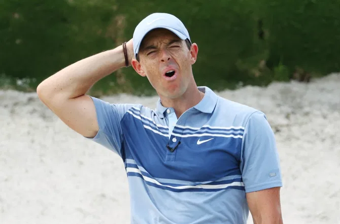

DNBC NEWS
DNBC NEWS
DNBC NEWS
RORY MIC-ILROY Golfers to wear microphones to ‘add energy and excitement’ to behind-closed-doors events during UK Swing of tournaments
Dan Brookes 4 Jun 2020, 18:35Updated: 5 Jun 2020, 17:08
PROFESSIONAL golfers look set to wear microphones while playing behind-closed-doors.
After as many as 30 European Tour events were postponed or cancelled in light of the coronavirus pandemic, a six-week UK Swing of golf tournaments was announced at the end of May.

And now, European Tour Chief Executive Keith Pelley thinks golf will have to get creative to add energy and excitement to proceedings without the presence of a crowd.
"Covid-19 allows you permission to try things a little bit differently," he said in an interview with the BBC.
“Once you’ve actually had a wireless mic on in competition and it hasn’t affected you in any such way – technology has come so far that it is really, really small and won’t disturb your swing – then it just becomes commonplace and a way of life.”
A European Tour spokesperson concurred: “We are always keen to push the envelope as far as innovation in golf is concerned to give added energy and excitement to our tournaments and to our viewers.
"We are therefore looking into the possibility of doing a couple of different things in our upcoming UK Swing and miking up players is just one of them.”
Microphones on players has proven popular at behind-closed-doors events in May like the TaylorMade Driving Relief Skins match that featured Rory McIlroy and Dustin Johnson take on Rickie Fowler and Matthew Wolff, and The Match: Champions for Charity, which saw Phil Mickelson and Tiger Woods team up with American football stars Tom Brady and Peyton Manning respectively.
It is not yet clear what else the European Tour has planned for its UK Swing.
The series will consist of six tournaments, teeing off with the British Masters at Newcastle's Close House on July 22.
Next will be the English Open at Marriott Forest of Arden then the English Championship at Marriott Hansbury Manor.
The Celtic Classic and Welsh Open will both take place at the Celtic Manor Resort in Newport before the Swing moves to The Belfry at the end of August for the UK Championship.